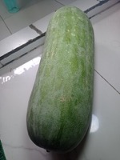

とうがん（冬瓜）の生産量 都道府県ランキング
1位から3位までと、とれた量
とうがんが日本でいちばん多くとれるのは沖縄県です。2,130 tで、全国（6,910 t）の31%を占めます。

| 順位 | 都道府県 | 収穫量 | 全国に占める割合 |
|---|---|---|---|
| 1位 | 沖縄県 | 2,130 t | 31% |
| 2位 | 愛知県 | 1,400 t | 20% |
| 3位 | 岡山県 | 816 t | 12% |
この数字について
- 分類：ウリ科
- 全国の収穫量：6,910 t
- この数字が表すもの：収穫量（畑や田でとれた重さ）
- 調査：地域特産野菜生産状況調査 令和6年産
- 30県分を調査（調査していない県は順位に入りません）
とうがんの生産量について、よくある質問
- とうがんの生産量が日本一の都道府県はどこですか？
- 沖縄県です。地域特産野菜生産状況調査（令和6年産）で2,130 tでした。
- とうがんの生産量ランキング2位・3位はどこですか？
- 2位は愛知県（1,400 t）、3位は岡山県（816 t）です。
- とうがんの全国の生産量はどれくらいですか？
- 6,910 t（令和6年産）です。